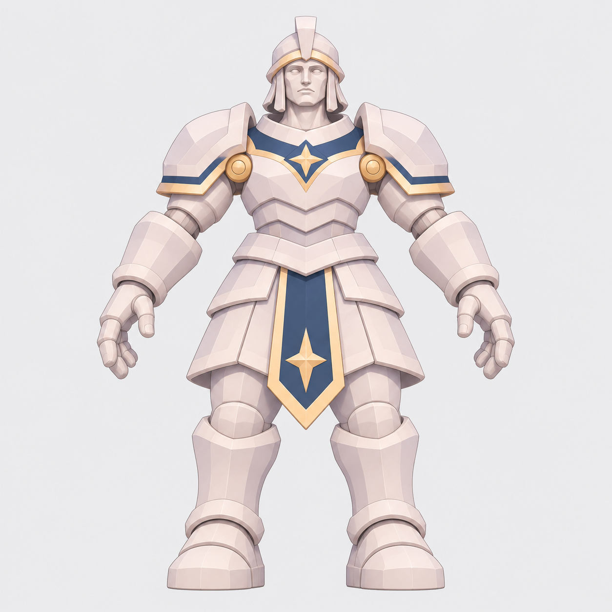
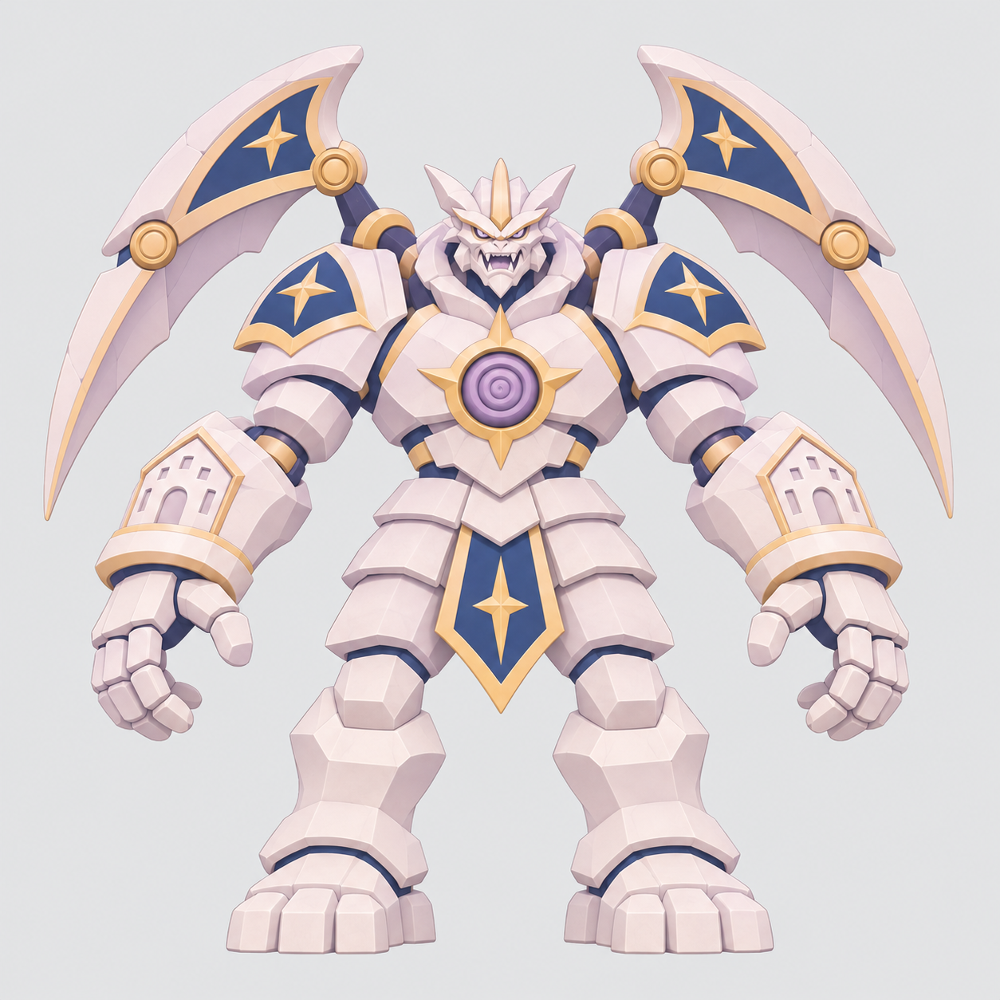
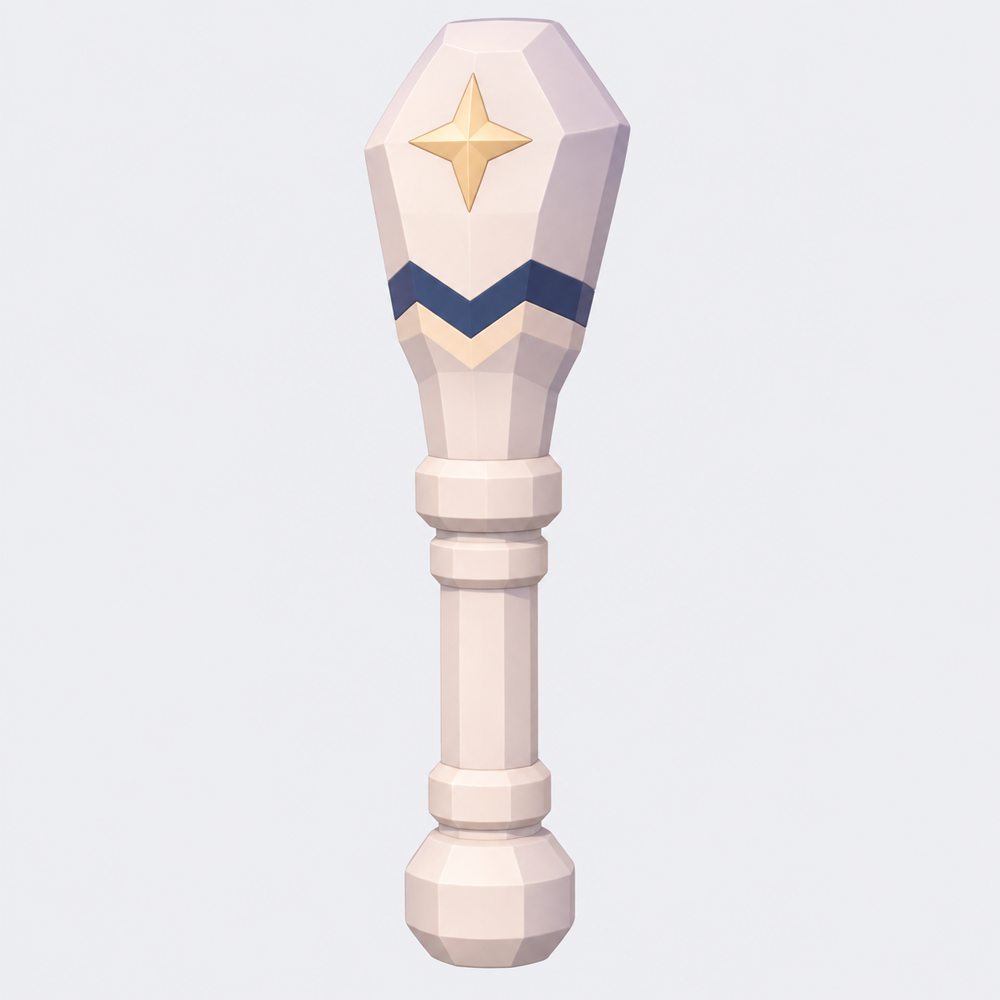

노멀 몸체 · A포즈
노멀 캐릭터 몸체를 생성합니다. 돌봉과 방패는 분리되어 있습니다.

ASTELLA / PART 1 STAGE 01 / TRIPO INPUT
각 PNG를 별도 Image-to-3D로 생성하세요. 네 장은 서로 다른 모델 입력입니다.
노멀 캐릭터 몸체를 생성합니다. 돌봉과 방패는 분리되어 있습니다.

몸체와 두 날개가 연결된 하나의 하드 캐릭터를 생성합니다.

돌봉을 별도 생성한 뒤 노멀의 오른손에 배치합니다.

방패를 별도 생성한 뒤 노멀의 왼손에 배치합니다.